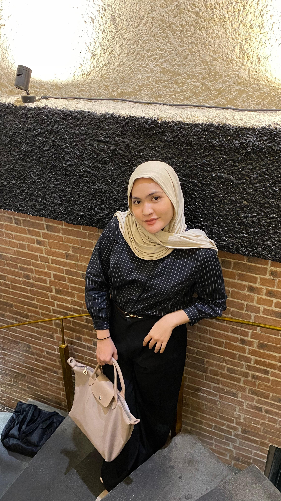

Imelda Rizki Aulia
Mahasiswa Ilmu Perpustakaan dan Sains Informasi
Biodata
| Nama Lengkap | Imelda Rizki Aulia |
|---|---|
| NIM | 220709091 |
| Program Studi | Ilmu Perpustakaan dan Sains Informasi |
| Fakultas | Fakultas Ilmu Budaya |
| Universitas | Universitas Sumatera Utara |
| Domisili | Medan, Sumatera Utara |
Pendidikan
-
2022 - Sekarang
Universitas Sumatera Utara
Ilmu Perpustakaan dan Sains Informasi -
2019 - 2022
SMA Negeri 1 Matauli Pandan
Jurusan IPS
Tentang Website Ini
Website ini dibuat untuk memenuhi tugas mata kuliah Pengembangan Web Perpustakaan.
Dikembangkan dengan dukungan dari Digilab Universitas Sumatera Utara sebagai referensi pembelajaran.
Tujuan utama website ini adalah menyediakan akses mudah terhadap koleksi digital untuk mendukung kegiatan akademik.